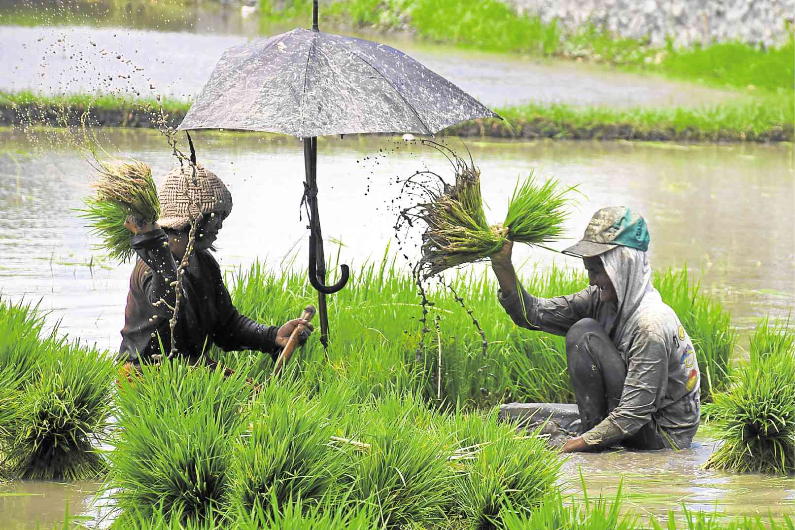
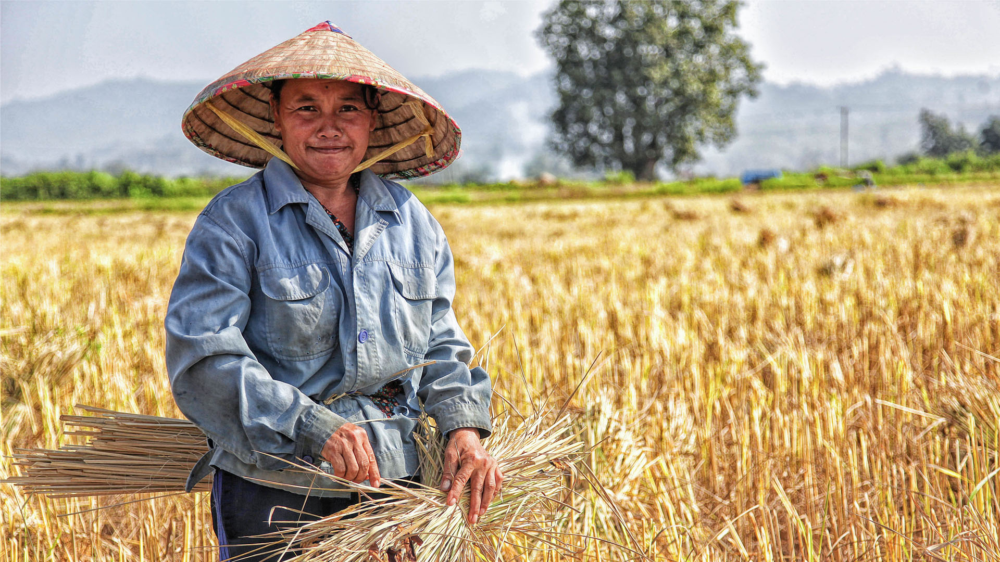
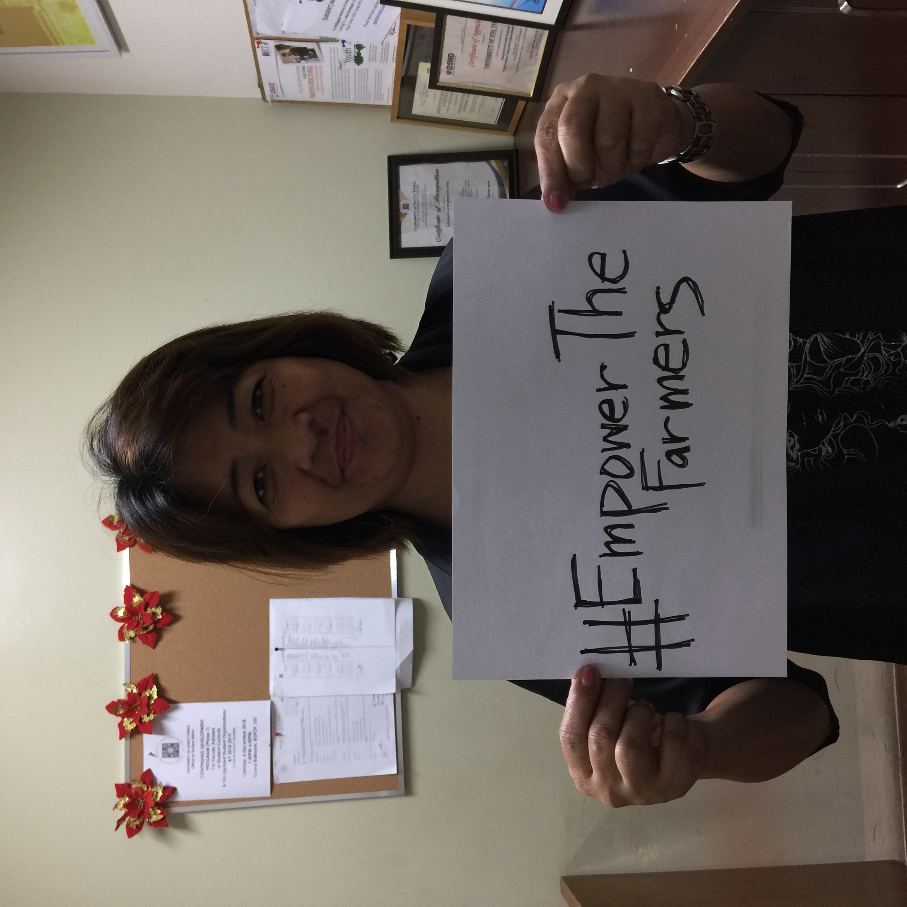
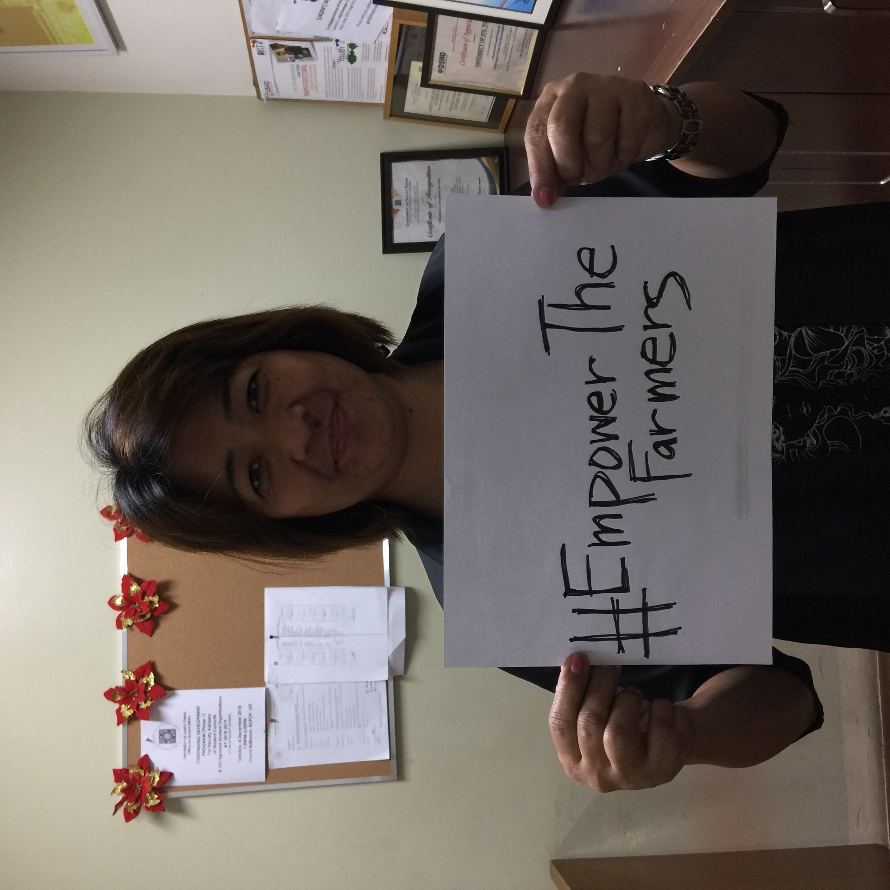

The Agrarian Reform
Agrarian Reform is very significant for the economy of any country because more than half of the population is employed in the agricultural sector. Agriculture is the main source of livelihood especially for the developing countries. Reforms are important because they protect the rights of the farmers.

Agrarian Reform could be defined as the rectification of the whole system of agriculture. It is normally done by the government where they redistribute the agricultural land among the farmers of the country.
Agrarian Reform could be defined as the rectification of the whole system of agriculture. It is normally done by the government where they redistribute the agricultural land among the farmers of the country.
It is concerned with the relation between production and distribution of land among the farmers. It also concerns the processing of the raw materials that are produced by farming the land from the respective industries.
For a long period of time, the agrarian system of the Philippines was being controlled by the large landlords. The small farmers in the Philippines were struggling for their rights to lands and other natural resources.
Farmers face a lot of challenges every day – expensive farm supplies, new breed of pests, very small to no return of investment, little support from the government and other relevant sectors, and climate change. Some of them even get killed for demanding their right to land, and dummy beneficiaries have been settled by landlords on land meant for the landless
Ironically, many of these food producers belong to the country's poorest sectors and are vulnerable to hunger.

What if our farmers give up on being farmers? What if they get tired of the same old ways? What if they sell their farms for commercial use? What if they don't see the purpose of what they do anymore? What if they give up on us?

 
